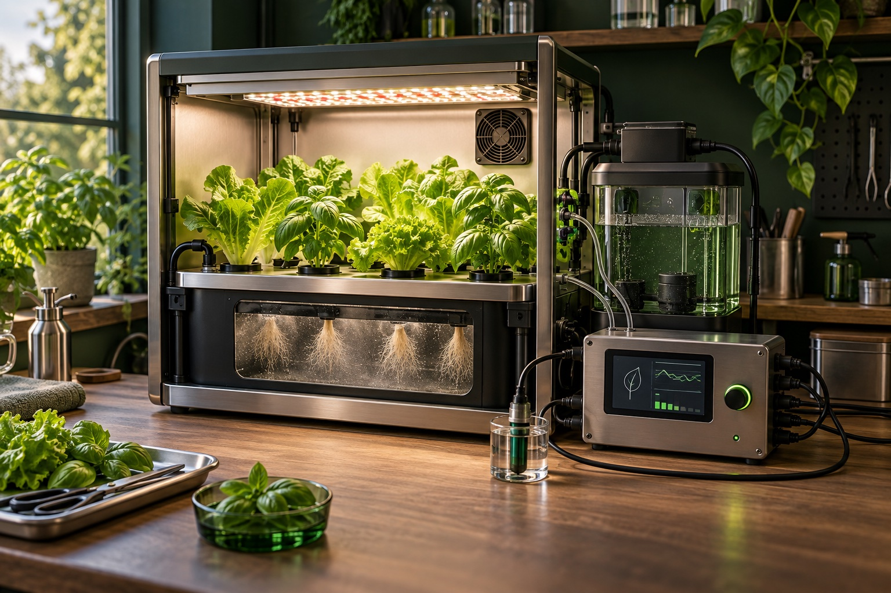
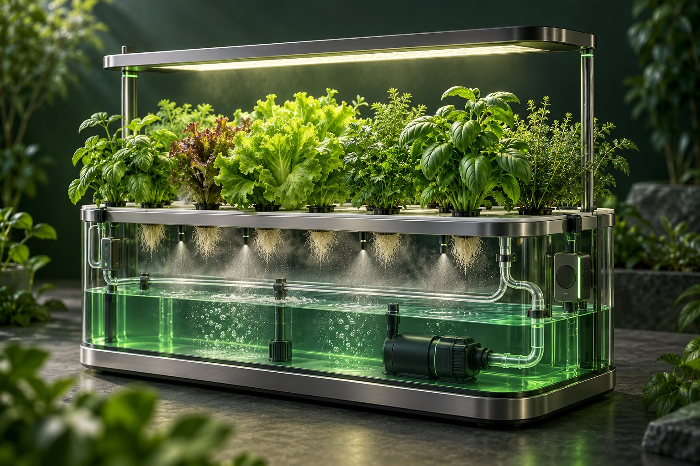
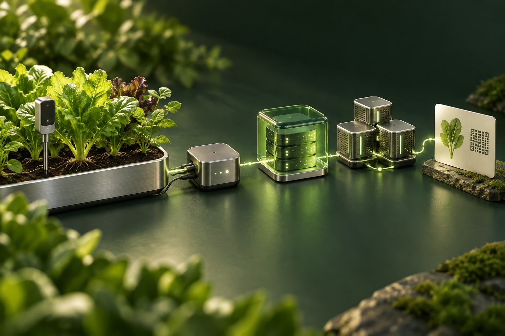
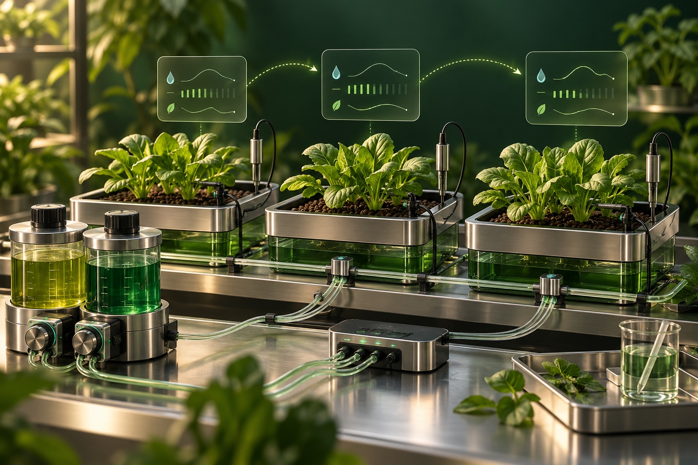
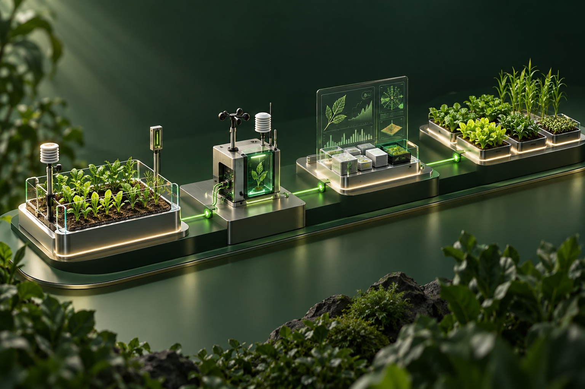

Grow with better visibility
The proposed monitoring layer would bring temperature, humidity, light, pH and nutrient readings together to help operators assess growing conditions.
Agrotech / Personal R&D
Exploring connections between aeroponic farming, IoT telemetry, ML-assisted calibration and blockchain records.
An exploration of how production data could support a more transparent agricultural ecosystem.

Real production.
Useful evidence.
Before a digital asset can represent anything meaningful, the underlying production needs to be observable. Leafcoin starts with growing conditions, crop records and the quality of the data.

The proposed monitoring layer would bring temperature, humidity, light, pH and nutrient readings together to help operators assess growing conditions.
A proposed product passport would connect seed origin, growing conditions, crop cycles and harvest records, with access through a QR code.
The proposed verification layer would anchor report fingerprints on a ledger so readers could check whether a recorded report has changed.
Leafcoin is presented here as a concept and personal R&D project. The public lab materials document historical prototypes. The architecture and roadmap describe proposed work; implementation status beyond those materials is not established here.
From a reading
to a verifiable record.
The proposed architecture separates data collection, off-chain storage and ledger-based integrity checks. Raw telemetry would remain off-chain, while the ledger would hold report hashes.

The proposed collection layer would timestamp readings and transport them through MQTT, retaining crop-cycle and device context. Data-quality checks would flag missing samples, outliers and calibration issues before readings are used in reports or model evaluation.
The proposed design would store raw telemetry off-chain in an access-controlled repository and record report hashes on a ledger. A matching hash can indicate that a report has not changed since it was recorded; it does not establish the accuracy of the underlying sensor readings.
Besu with QBFT consensus is being considered as an option for a permissioned EVM network. Network membership, validator governance, operation and verification design would require evaluation.
Permissioning and consensus do not by themselves guarantee transaction confidentiality. Data visibility, access controls and any confidentiality mechanism would require separate design and validation.
The research direction includes evaluating ML models for forecasts and cultivation recommendations using validated data, with operator review before any cultivation changes. Dataset and model versioning would support investigation of recommendations.
A proposed batch passport would bring together seed origin, growing conditions, nutrient records, crop-cycle dates and harvest history. Which records could be shared, and with whom, would depend on access rules defined and validated for the implementation.
The concept explores whether verifiable production records could support asset-linked services. Token design, asset rights, custody, valuation and redemption are research questions.
The feasibility of any financial integration would require evaluation of applicable rules, responsibilities and any necessary authorisations. Partnership, investment and approval status are not established by the materials presented here.
Observe.
Adjust. Repeat.
A proposed research loop would use repeated cultivation iterations to evaluate irrigation schedules and nutrient-solution composition against observed plant responses.

Each experiment would record the solution recipe, dosing, irrigation intervals and duration, pH, electrical conductivity, water temperature, growing conditions and crop stage. Plant observations and crop outcomes would provide context for comparison.
ML models could be evaluated for suggesting small changes to irrigation settings and solution composition. An operator would review each proposal against predefined experimental limits before a new iteration.
Successive iterations would compare predictions with observed responses under comparable conditions. Later iterations would be reserved for validation, with recipe, parameter and model versions retained so results could be traced.
This is a proposed research direction. Repeated measurements and experiments would be needed to establish model quality and useful operating limits. Sensor calibration would remain a separate requirement.
Build in stages.
Validate each step.
A proposed research sequence. Each stage would require validation; no completion status or launch dates are specified here.

Connect a pilot farm, validate readings and build monitoring views. Test report fingerprints and a basic batch passport.
Validate: sensor coverage, data quality and record verification.
Evaluate forecasts and recommendations against recorded crop outcomes. Keep operators in control of cultivation changes.
Validate: model quality, reproducibility and operator review.
Research asset-linked services and partner requirements. Define legal responsibilities and user rights before building financial flows.
Validate: feasibility, partner scope and the regulatory path.
Extend the system only after the pilot is useful and repeatable. Adapt monitoring and models to new sites and crops.
Validate: repeatable operations and sustainable unit economics.
The work
behind the idea.
The concept grew out of Home Aeroponics, a personal IoT and automation lab. Its public repositories preserve parts of that work.
Swipe or scroll to browse. Focus the gallery to use Left/Right arrows, Home or End.
Control layer
Historical Python and MQTT controller examples, with monitoring and integration context.
Device layer
Archived Arduino experiments for sensing, telemetry and relay control.
Physical prototype
Photographs and project context from the broader historical installation.
These archival materials provide context for the personal lab work. They do not establish the implementation status of the wider Leafcoin concept. Build, runtime and hardware limitations are documented in the repositories.
Concept creator
Platform / SRE engineer · Personal R&D